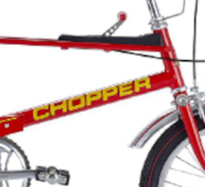

They don’t make them like that any more: the Raleigh Chopper

In this series of articles I usually write about icons of consumer electronics, but I feel that a bicycle is sufficiently technological to include. After all, the Raleigh Chopper – in the UK at least – was to cycling what the Sony Walkman was to music. The Chopper was a radically different kind of bike and it sold in crazy numbers, in the UK and elsewhere. It’s difficult to believe now but, fifty years ago, all kids and many adults got around by bicycle. Although everybody had a bike, nobody liked bikes much. They were utilitarian, attracting no more affection than your pencil case or your school uniform. The Walkman changed the way we thought about portable audio devices, and the Chopper changed the way we thought about cycling. For the first time, cycling was cool. In fact, the Raleigh company might have gone bust, had it not been for the extraordinary success of the Chopper.
When the Chopper was released in the late 60s, most bicycles either had dropped or flat handlebars, as most still do. They certainly had two wheels the same size. The Chopper was modeled on Harley-Davidson’s motorcycle cruisers. The handlebars were enormous ‘ape-hangers’, the seat was almost a couch and, oh boy, those wheels: a huge, fat one on the back, and an absurdly skimpy one on the front. The chopper even had suspension, and a centre console housing the gearshift lever – like you’d find in a car.

When I was twelve years old, I desperately wanted a Raleigh Chopper. In particular, I wanted the model with derailleur gears. Why? Because nobody else had one, I guess. And for good reason, it turns out. I had to wait until these started to become available second-hand, because nobody except the sons of company directors had new stuff. And it was always sons: bicycles for girls had low crossbars, so girls could mount them decorously whilst wearing skirts. The Chopper was always a boys’ bike.
Eventually I got a Mark 2 Chopper – the only model to have the derailleur gears – a few years old. It had, in fact, belonged to the son of a company director. He had taken good care of it, or perhaps never ridden it, but it showed signs of age. The Chopper was predominantly of steel construction, and prone to rust. I spent many hours trying to remove the rust spots from the chromed wheel rims and handlebars. I never had much success with this nor, frankly, with actually riding the Chopper.
The steel construction meant that a Chopper weighed about 20kg. At 12 years of age, that was half my bodyweight. It’s painful to imagine pedaling a bike half my weight these days – not that such a thing exists. In addition, all the weight was at the rear, which meant that the front wheel lifted easily. That was fine for doing stunts, but awful for cornering. I guess the Chopper was really intended for teenagers to cruise around the neighbourhood attractions, not for actual transport. I, on the other hand, had a four-mile ride to school every day, uphill and into a stiff sea breeze. As you might imagine, my infatuation with the Chopper did not last.
Although the Chopper was successful nationally, none of my friends or schoolmates had one, and they weren’t impressed with mine. I guess they, or their parents, realized how inappropriate such a bike was for daily travel.
The sad reality is that the Chopper was a profoundly impractical bicycle.
For example, the centre-console gearshift was hard to operate accurately. That wasn’t such a problem for the three-speed models, because there was so much space between the gear stops. For the five-speed, however, it was hard to judge exactly where to put the lever to get a particular gear. You couldn’t adjust the lever incrementally, because it just didn’t provide enough sensitivity. The ape-hanger handlebars didn’t allow for multiple hand positions, soon becoming tiring on long rides. A couch-like seat might have been comfortable on a Harley but, if you actually had to pedal, it chafed horribly. And that seat never got any more comfortable with use.
Everything that made the Chopper look good to a teenaged boy in the 70s made it horrible to ride. I’m tempted to say that the Chopper was a triumph of style over substance but, in fact, it was the substance – the sheer amount of it – that was the main problem.
The Chopper, or bikes like it, are often shown in TV shows set in the 70s, for period authenticity. The Chopper shouts ‘70s’ like few other artefacts. But, despite what I’ve often read, the bike ridden by Mike in Stranger Things is not a Chopper: it was custom-made for the show and, probably based on the Schwinn Sting-Ray (yes, it really does have a hyphen in the name). The Sting-Ray (see photo below) has distinctive, curved frame members, which set it apart from the Chopper. And the wheels are the same size.
Since the Sting-Ray was introduced in 1963, it’s plausible that it was an inspiration for the Chopper, but the Chopper departs from conventional bicycle aesthetics far more than the Sting-Ray does. I imagine that the Sting-Ray was less of a pain to ride, as well.
For all its faults, I rode my Chopper for thousands of miles, every mile of which was agony. I went on to cycle (sensible bikes) in races and, even in my old age, I still cycle every day. After all, after you’ve ridden a Chopper for a few years, every other bike feels like it’s made of air. My current mount, a Genesis Tour de Fer, is porky by modern standards, especially with its full set of luggage, but it’s still a mere vapour compared to the Chopper. So perhaps I should thank the old Chopper for preparing me well for a lifetime of cycling.
The Chopper had a pretty good run for what was, essentially, a fad: from 1969 until about 1983. At that time it was superseded by the next teenage cycling fad: BMX. BMX bikes were mostly designed for stunts and showing off just as the Chopper was, but you could at least use one to get from A to B.
Such is the nostalgic appeal of the Chopper that Raleigh briefly introduced a new model a few years ago. I understand that it sold well, but Raleigh has so far not continued the production run. Understandable: I can’t imaging that the Chopper would appeal much to kids today, even those few who live in a place where it’s actually safe to cycle. And I can’t imagine any father who had a Chopper in his youth would inflict one on his kids.